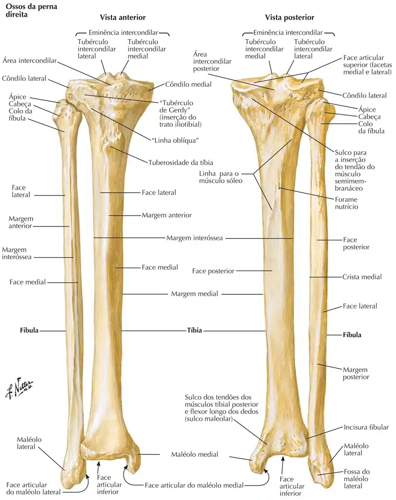
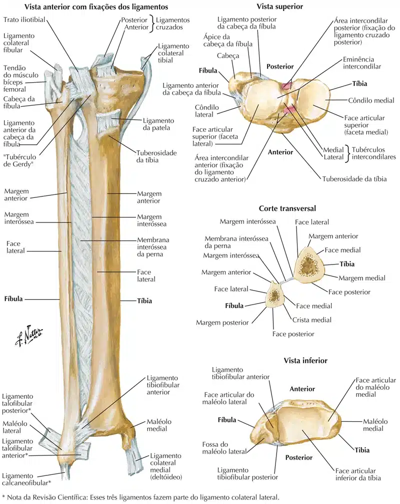
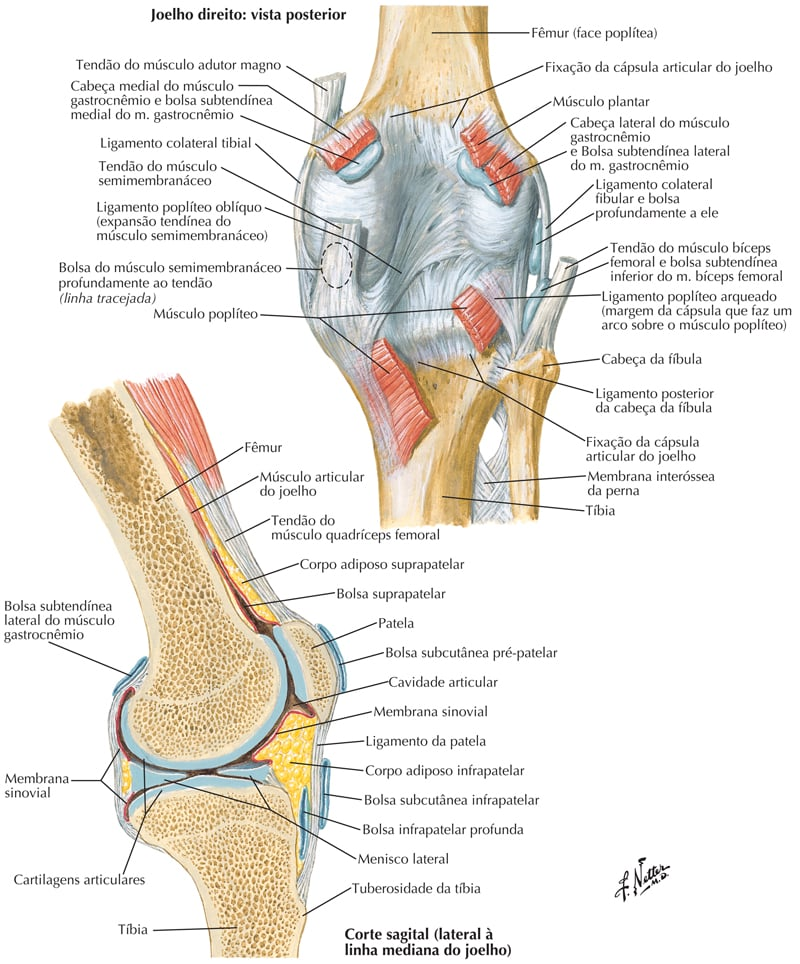
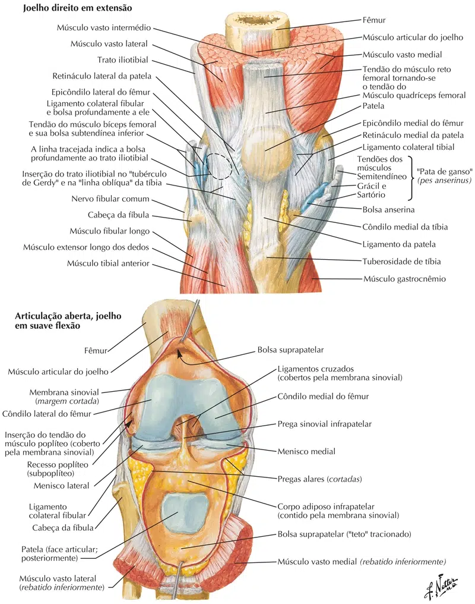
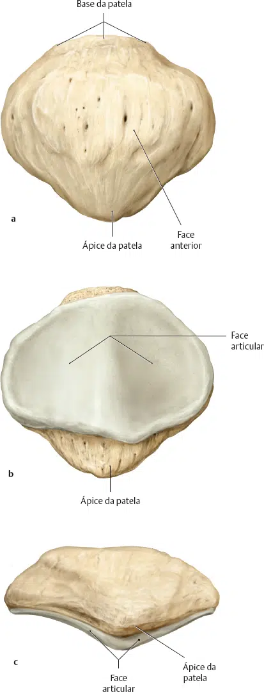

O joelho é um tipo de articulação sinovial composto por três ossos:
Fêmur em sua porção distal, tíbia em sua porção proximal e a patela.
A articulação do joelho tem uma importante influência nos movimentos;
Devido as suas dimensões acentuadas e formas incongruentes;
Tem pouca estabilidade devido a sua anatomia;
Mas ao mesmo tempo tem uma grande flexibilidade e por este motivo é dependente da musculatura e dos ligamentos;
Possui estabilizadores estáticos e estabilizadores dinâmicos, onde a estabilidade dinâmica é conferida pela musculatura e a estabilidade estática pelos ligamentos, meniscos e estruturas ósseas.
NETTER: Frank H. Netter Atlas De Anatomia Humana. 7 ed. Rio de Janeiro: Elsevier, 2021.
A extremidade distal do fêmur consiste em dois grandes côndilos, separados posteriormente pela fossa intercondilar muito profunda e, anteriormente, pela face patelar, na qual desliza a patela.
A superfície condilar anterior é chamada superfície troclear do fêmur.
A extremidade superior da tíbia consiste em dois côndilos grandes com superfícies articulares superiormente para a articulação com o fêmur.
Na região posterolateral existe, uma faceta articular para a cabeça da fíbula, que está voltada um pouco para baixo.
Na junção anteroinferior dos côndilos tibiais, situa-se a tuberosidade tibial, uma eminência na qual se insere o ligamento patelar.
A patela oferece um ponto de apoio extra para o tendão do quadríceps na geração de extensão do joelho, especialmente mais para os limites da extensão.

NETTER: Frank H. Netter Atlas De Anatomia Humana. 7 ed. Rio de Janeiro: Elsevier, 2021.

NETTER: Frank H. Netter Atlas De Anatomia Humana. 7 ed. Rio de Janeiro: Elsevier, 2021.
A patela é um osso triangular que se interpõe às fibras tendíneas de inserção inferior do músculo quadríceps, achatado e de contorno quase triangular é visto como osso sesamóidepor desenvolver-se em um tendão, apresentar em seu centro de ossificação uma delimitação nodular ou trabecular, compõe-se de tecido esponjoso denso.
Serve para proteger a frente da articulação e aumenta a alavanca do quadríceps femoral, fazendo-o agir em um ângulo maior.
Ao redor da articulação do joelho existem 12 bolsas, pois os tendões seguem paralelamente aos ossos e tracionam a articulação no sentido longitudinal quando o joelho está em movimento.
Suas principais bolsas são: as bolsas subcutâneas pré-patelar e infrapatelar.
Estas estão localizadas na face convexa da articulação, que irão permitir a pele movimentar-se livremente durante movimentos do joelho.

NETTER: Frank H. Netter Atlas De Anatomia Humana. 7 ed. Rio de Janeiro: Elsevier, 2021.

NETTER: Frank H. Netter Atlas De Anatomia Humana. 7 ed. Rio de Janeiro: Elsevier, 2021.

PROMETHEUS: Schünke, Michael. Coleção – Atlas de Anatomia 3 Volumes. 4 ed. Rio de Janeiro: Guanabara Koogan, 2019.